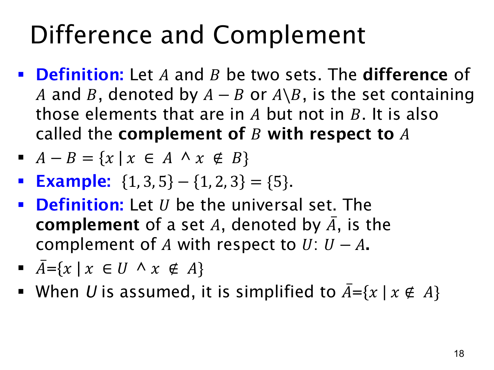

L1.4 · 第 18 页讲解原文
查看这一页课件

差集与补集：必须看清参照范围
集合 A 减去 B 的差集（difference）记为 A−B 或 A∖B，只留下在 A 中、但不在 B 中的元素：
A−B={x∣x∈A∧x∈/B}.
例如 {1,3,5}−{1,2,3}={5}。从左边的集合出发删去同时属于右边的 1,3；右边独有的 2 本来不在左边，不会进入结果。差集一般不交换：A−B 与 B−A 常常不同。课件也把 A−B 称为“B 相对于 A 的补集”，强调留下的是 A 内不属于 B 的部分。
若已选定一个全集 U，集合 A 的补集通常记为 A，定义为
A=U−A={x∣x∈U∧x∈/A}.
当 U 在上下文中已经固定，可简写成 {x∣x∈/A}，但“x 从 U 中取”的限制仍然隐含在内。例如若 U={1,2,3,4}、A={1,3}，则 A={2,4}；若把全集换成 {1,2,3,4,5}，补集就会多一个 5。所以补集依赖全集，不能脱离参照范围孤立计算。